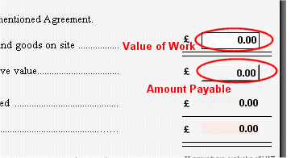

Editing Progress Payments |
To edit the Value of work executed and of materials and goods on site field, click into the box and enter a value. To recalculate the amounts shown on the Progress Payment, either click somewhere else on the form or press the tab key on the keyboard.

The Amount Payable field is automatically populated from the Retention amount, but this field can be amended with custom figures. To enter a value in the 'Amount Payable' field, click on the button and the following 'Edit Amount' window will appear:
Select the option to Enter amount manually and enter the desired amount in the box. Click Ok to save and exit or Cancel to close.
The Form Distribution list may also need editing, which can be accessed by clicking on the Distribution List tab. The user can select/deselect team members for inclusion on the form Transmittal Sheet by clicking on the checkbox in the send column. For more information on how to edit this, see Form Distribution List.
Each form in the active job has an associated Form Distribution list. Each of these are populated from the Global Distribution lists. For more information on this, see Global Distribution List. Please Note: Changes made in the Global Distribution lists will be reflected in the Form Distribution lists of any subsequently added forms.
See Also:
Editing a Form
Issuing a Form
Recalling forms
Override Payment Figures Calculated Automatically
Spell Checker
Contract Administrator Guidance (helpful
advice and information about contract administration and communication)